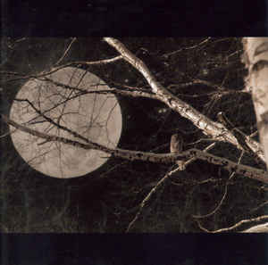

Et de 3! Voici pour notre plus grand plaisir une nouvelle compilation / mix de musiques faites pour rêver. Au sommaire des artistes qui ne figuraient pas dans les 2 précédentes compilations (c’était voulu) comme Craig ARMSTRONG (tiens, tiens…) par exemple. Il est clair que ce troisième opus est aussi indispensable que les 2 autres, d’autant plus qu’il est trouvable chez n’importe quel bon disquaire (généralement au rayon compilation. Vous n’avez plus d’excuse pour ne pas l’acheter. BUY IT !
Compilation Musiques de Nuit Vol.3 - [74′] - label Labels / Virgin France
